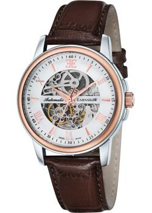

«Earnshaw Beagle»

«Описание товара»
Механические часы с автоподзаводом. Скелетон. Минеральное стекло. Стрелки и маркеры часа с люминесцентным покрытием. Корпус выполнен из стали с частичным IP покрытием.Кожаный ремень.
«Характеристики товара»
Часы - Швейцарские часы Тип механизма - Механические часы с автоподзаводом Материал - Нержавеющая сталь + IP покрытие Пол - Мужские
«Подробное описание товара»
Водозащита - WR 50 Стекло - Минеральное стекло Дизайн - Англия Производство - Швейцария Гарантия - 2 года Диаметр 42 мм
«Casio G-Shock»

«Описание товара»
Кварцевые часы. Аналогово-цифровой циферблат. Водозащита WR 200. Ударопрочная конструкция, защищает механизм от ударов и вибрации.
«Характеристики товара»
Часы - Японские часы Тип механизма - Кварцевые часы Материал - Пластик Пол - Мужские Водозащита - WR 200 Стекло - Минеральное стекло
«Подробное описание товара»
Двойная светодиодная подсветка. Настраиваемая длительность подсветки (1.5 или 3 секунды). Послесвечение. Второй часовой пояс. Секундомер с точностью показаний 1/100. Режимы измерения секундомера: прошедшее время, промежуточное время, время 1го-2го места. Таймер обратного отсчета времени от 1 минуты до 100 минут (1-минутное возрастание). 5 будильников (1 с функцией повтора сигнала). Ежечасный сигнал. Автоматический календарь (до 2099 года). 12/24х часовой формат времени. Функция отключения звука. Минеральное стекло. Корпус и ремешок выполнены из полимерного материала. Размеры корпуса 49 мм х 54 мм, толщина 16 мм. Срок службы батареи: 3 года.